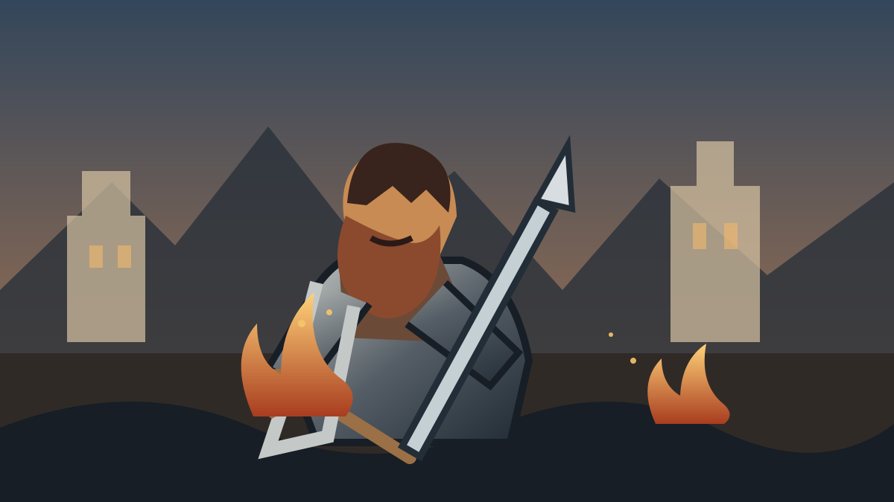

Die letzten Schreie von Dornfels
Der Krieger

Rasse: Zwerge
Beruf: Der Krieger setzt seine Stärke und den sicheren Umgang mit Waffen ein, um sich im Kampf zu behaupten und andere zu schützen.

Rasse: Zwerge
Beruf: Der Krieger setzt seine Stärke und den sicheren Umgang mit Waffen ein, um sich im Kampf zu behaupten und andere zu schützen.